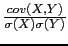
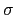

suivant: Le nuage de points
monter: Les fonctions statistiques à
précédent: La corrélation : correlation
Table des matières
Index
Covariance et corrélation : covariance_correlation
covariance_correlation a les mêmes arguments que
covariance : si les effectifs sont égaux à 1,
covariance_correlation a pour argument deux listes de même longueur ou
une matrice ayant deux colonnes représentant deux variables aléatoires X
et Y et sinon covariance_correlation a pour argument trois listes de
même longueur ou une matrice ayant trois colonnes représentant deux
variables aléatoires X et Y et la pondération de leurs effectifs ou
encore une matrice M et -1, où M donne la pondération de X (la
première colonne de M sans M[0, 0]) et de Y (la première ligne de M
sans M[0, 0]).
covariance_correlation renvoie la liste de la
covariance cov(X, Y) et du coefficient de corrélation linéaire des
deux variables aléatoires X et Y.
On a
=  où
(X) (resp (Y)) désigne l'écart-type de X (respY).
On tape :
covariance_correlation([[1,1],[2,4],[3,9],[4,16]])
On obtient :
[25/4,100/(4*sqrt(645))]
On tape (on a A:=[0,1,2,3,4,5,6,7,8,9,10,11]) :
covariance_correlation(A,A^2)
On obtient :
[1573/12,18876/(572*sqrt(1173))]
On tape :
covariance_correlation([1,2,3,4],[1,4,9,16],[3,1,5,2])
Ou on tape :
covariance_correlation([[1,1,3],[2,4,1],[3,9,5],[4,16,2]])
On obtient :
[662/121,662/(180*sqrt(14))]
On tape :
covariance_correlation([1,2,3,4],[1,4,9,16],
[[3,0,0,0],[0,1,0,0],[0,0,5,0],[0,0,0,2]])
On obtient :
[662/121,662/(180*sqrt(14))]
On tape :
covariance_correlation([["b a",1,2,3,4],[1,3,0,0,0], [4,0,1,0,0],[9,0,0,5,0],[16,0,0,0,2]],-1)
a",1,2,3,4],[1,3,0,0,0], [4,0,1,0,0],[9,0,0,5,0],[16,0,0,0,2]],-1)
On obtient :
[662/121,662/(180*sqrt(14))]
suivant: Le nuage de points
monter: Les fonctions statistiques à
précédent: La corrélation : correlation
Table des matières
Index
Documentation de giac écrite par Renée De Graeve